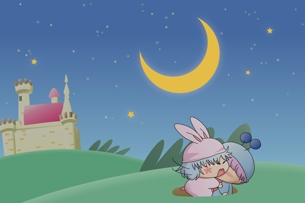

パピィ「もうっ、真っ暗で何も見えないじゃないの！」
ムルモ「抜け穴なんだから仕方ないでしゅ」
壁を伝いながら、二人はゆっくりゆっくり前へ進んでいきます。
パピィ「あたちを置いていったらただじゃすまないわよ」
ムルモ「ボクの手を離しちゃダメでしゅよ」
歩いているうちにだんだん目が慣れてきて、自分たちが地下水路を歩いていることが分かりました。
パピィ「これで行き止まりだったら責任取りなちゃいね」
ムルモ「ボクの記憶に間違いはないはずでしゅ！」
パピィ「ムルモの記憶だから信用出来ないわね」
ムルモ「いいから黙ってて欲しいでしゅ～！」
歩き始めて１時間が経った頃でしょうか。
二人の前に見えたのは…。
ムルモ「あっ、あの光は出口じゃないでしゅか？
ボクたちやっと出られるんでしゅよ」
パピィ「そ、そうね」
ムルモが地上への出口から顔を出してみると、空には大きな月が、そして遠くにお城があるのが見えました。
ムルモ「やっと出られたでしゅ！
ボクたちこんなに歩いたんでしゅね、パピィ」
ムルモがパピィの方を振り返ると、パピィは目に涙を浮かべていました。

ムルモ「パピィ？」
パピィ「わ～～んっ！」
突然、パピィがムルモに抱きつきました。
驚いたムルモが何かを言いかけましたが、その前にパピィが泣きながら叫びました。
パピィ「ムルモがあたちのことを覚えてなくてもいいわ。
でも…あたちはムルモのことが好きよ！
ずっとずっと前からムルモのことが好き！
好き！好き！もう大好きなんだからっ！」
ムルモ「パピィ…」
パピィ「ムルモ～っ」
ムルモは戸惑いながらも、わんわん泣き続けるパピィを自分の胸に引き寄せ、そっと抱きしめてあげました。
鮮やかな月明かりがいつまでも二人を照らし続けます。
二人を暖かく包み込むように。
二人のこんな展開なんてあり得ない！という苦情が寄せられそうですが(^^;、アニメとは違うアナザーストーリーということで無理矢理パピィちゃんに告白(?)させてみました。いやぁ、ホントこっぱずかしいですね(^^;。二人のセリフをもっとじっくり書きたかったけれど、文章が苦手な私なのでこれで限界です。
二人とも頑固な性格ですが、私的にはムルモがパピィに告白するよりも前に、パピィが素直になってムルモに告白するのかなぁと思っています。というかムルモは１５７話「ラベンダー色の恋・妖精編」でパピィにキスしたりとすでに態度で表現済みですね。「いや、あれぐらいじゃまだまだ…」という意見もありそうだけど(^^;。
ストーリーの方はあと１話だけ続きますのでお付き合いくださいませ(^^)。それと、「暗い地下水路で何で魔法使わないの？」というツッコミは無しでお願いします～(^◇^;)。
(2006/10/28)